Июнь 2016
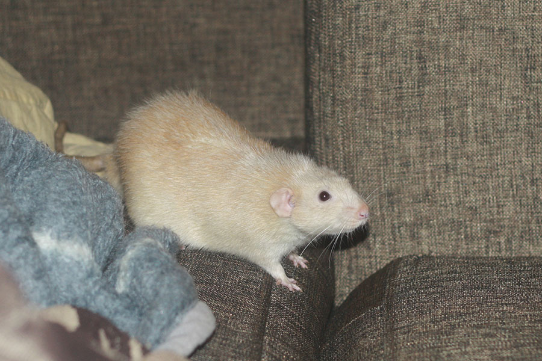
Чен: — Хозяин, а почему диван грызть нельзя? Как понять "потому что габеновский"?
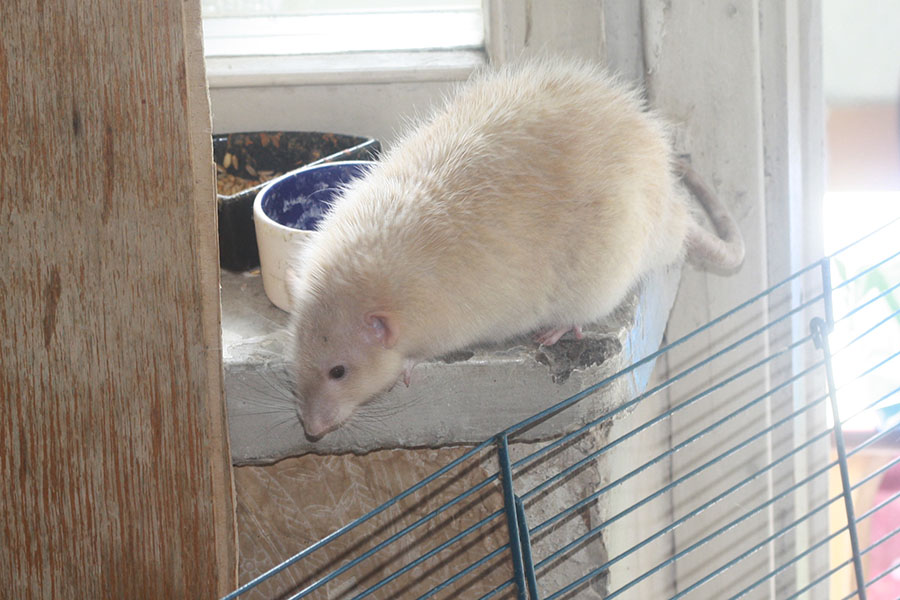
— Так, а вниз как?
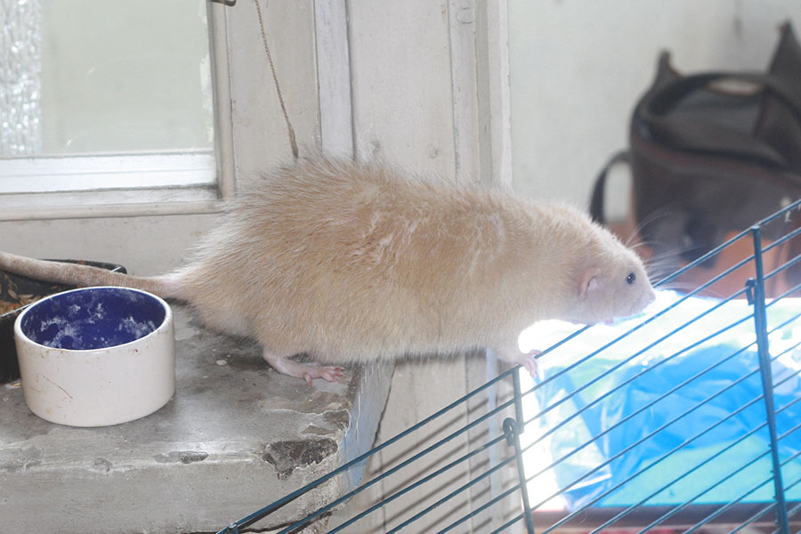
— Не, по этой решётке подняться ещё можно, а вот для спуска она какая-то ненадёжная...
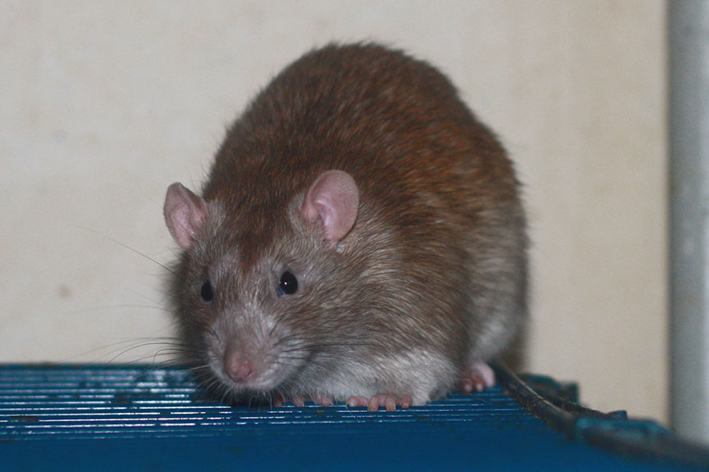
Параллакс: — Чего это ты уставился и какой-то прибор наставил?
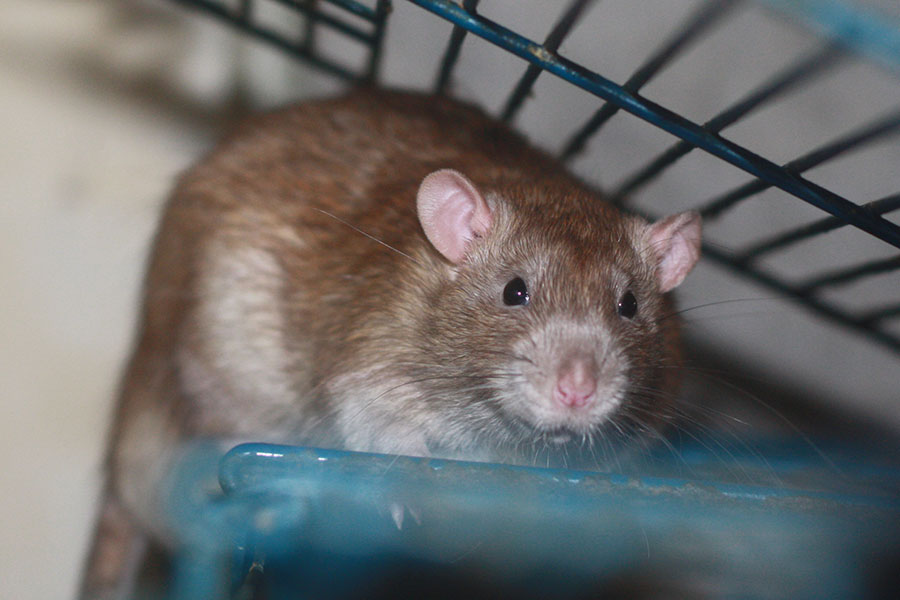
Парацельс: — И в самом деле подозрительно!..
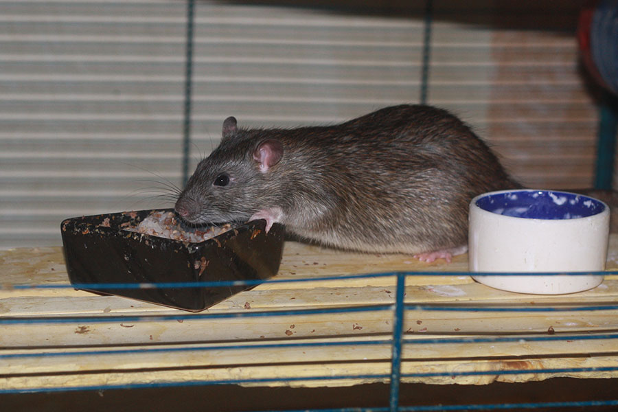
Параллакс: — Ладно, паранойя — паранойей, а обед по расписанию!
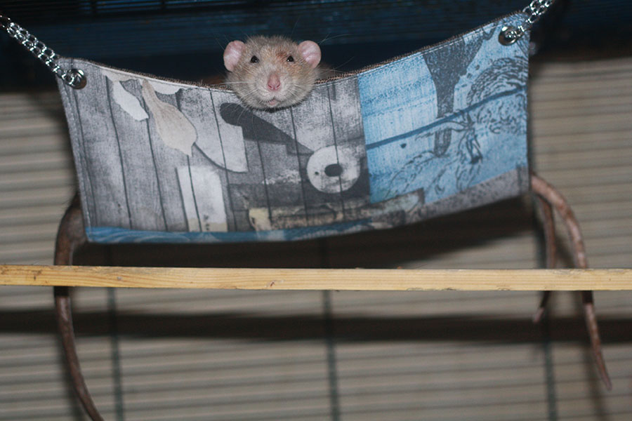
Ченризи: — Какие три хвоста? Дай поспать!
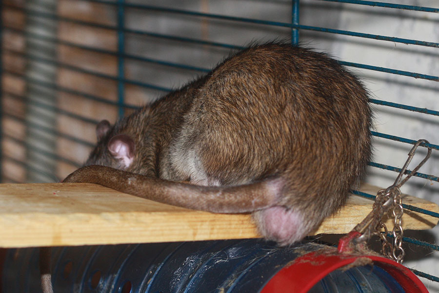
Параллакс: — Вот именно, какое кому дело до чужих хвостов...
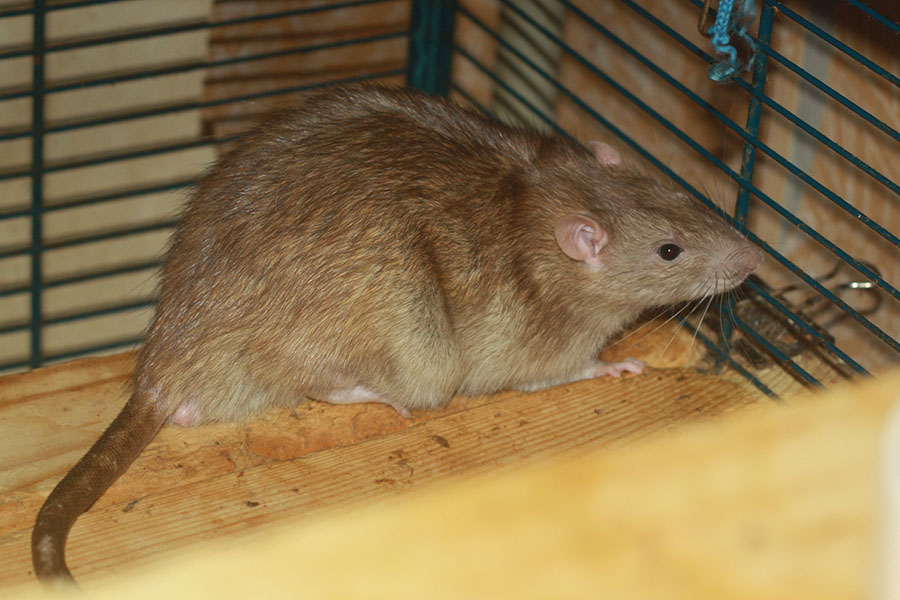
Парацельс: — Не, всё же три хвоста — это несолько слишком; два — ещё куда ни шло.
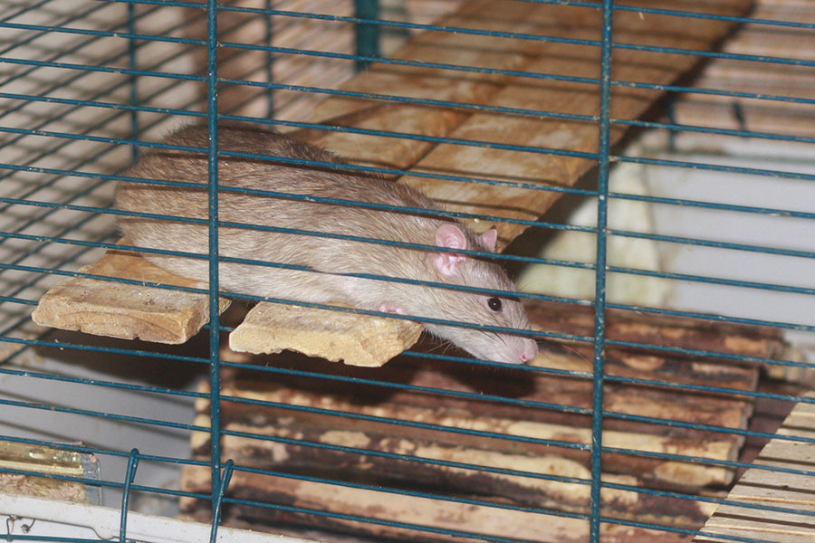
Парцельс: — Пойти гулять или не пойти? Вот в чём вопрос...

Чен: — Хозяин, что за жара стоит, в рот мне ноги!
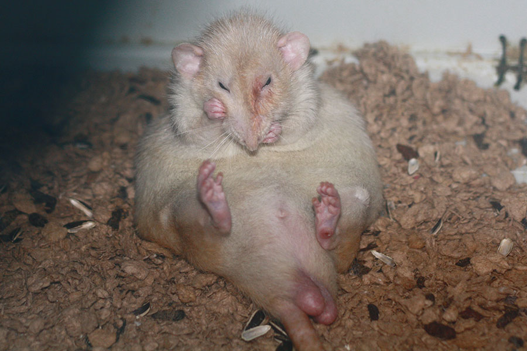
— Аж порфирин выступил, надо умыться...
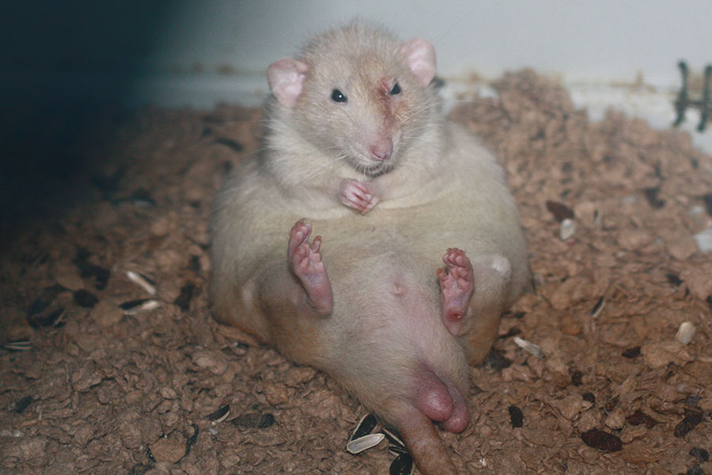
— Что, не получилось? Тогда ты мне морду вытирай!
Примечание: да, я наконец-то увидел, что крысы могут валяться на спине лапами кверху! Для этого потребовалось больше 10 лет...